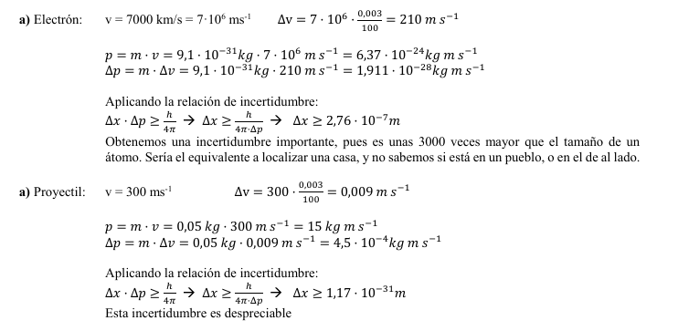

Introducción.
En el año 1927, asumiendo ya el carácter dual de la materia, Heisenberg descubre que es imposible medir al mismo tiempo la posición y la velocidad de una partícula. Además, descubre que el hecho de medir modifica la medida.
En el año 1927, asumiendo ya el carácter dual de la materia, Heisenberg descubre que es imposible medir al mismo tiempo la posición y la velocidad de una partícula. Además, descubre que el hecho de medir modifica la medida.
Si intentamos medir la posición y la velocidad de un electrón nos encontramos con varios problemas.
ES IMPOSIBLE FIJAR LA POSICIÓN DE UN ELECTRÓN PARA MEDIR SU POSICIÓN Y VELOCIDAD AL MISMO TIEMPO.
"Es imposible medir simultáneamente y con total exactitud la posición y la cantidad de movimiento (velocidad) de
una partícula. Siempre la incertidumbre (error que podemos cometer) en la medida cumplirá $\boxed{\Delta x \cdot \Delta p \geq \frac{h}{4\pi}}$ "
$\Delta x$ y $\Delta p$ son la incertidumbre de la posición y la cantidad de movimiento. Si hacemos una de las variables muy pequeñas, exactitud, la otra se hará muy grande, gran error.
PRINCIPIO DE INCERTIDUMBRE PARA ENERGÍA Y TIEMPO.
El principio de incertidumbre no sólo se observa para las magnitudes posición y momento lineal. También se puede observar para las transiciones de los electrones(de un nivel a otro) dentro del átomo. En este caso se puede definir por: $$\boxed{\Delta E \cdot \Delta t \geq \frac{h}{4\pi}}$$
Este nuevo descubrimiento acarreó varias consecuencias:
Es muy conocido el experimento del Gato de Schröndiger:

De Wikipedia, CC BY-SA 3.0, Enlace
Este experimento consiste en disponer de una cerradura cuántica donde puede hay un gato junto con un frasco de veneno. Hasta que abramos la caja el gato tiene la misma posibilidad de estar vivo o muerto y el hecho de abrir la caja influye en lo que encontremos la abrirla.
Calcular la incertidumbre en la determinación de la posición en los siguientes casos:
a) Electrón cuya velocidad, de 7000 km/s, se ha medido con una incertidumbre del 0,003%
b) Proyectil de 50 g que se desplaza a una velocidad de 300 m/s, medida con la misma incertidumbre que el
caso anterior.
(datos: h = 6,63·10-34 J·s , me = 9,1 ·10-31 kg)

Obra publicada con Licencia Creative Commons Reconocimiento Compartir igual 4.0